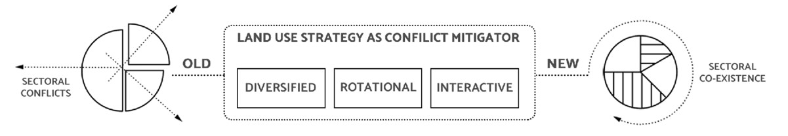
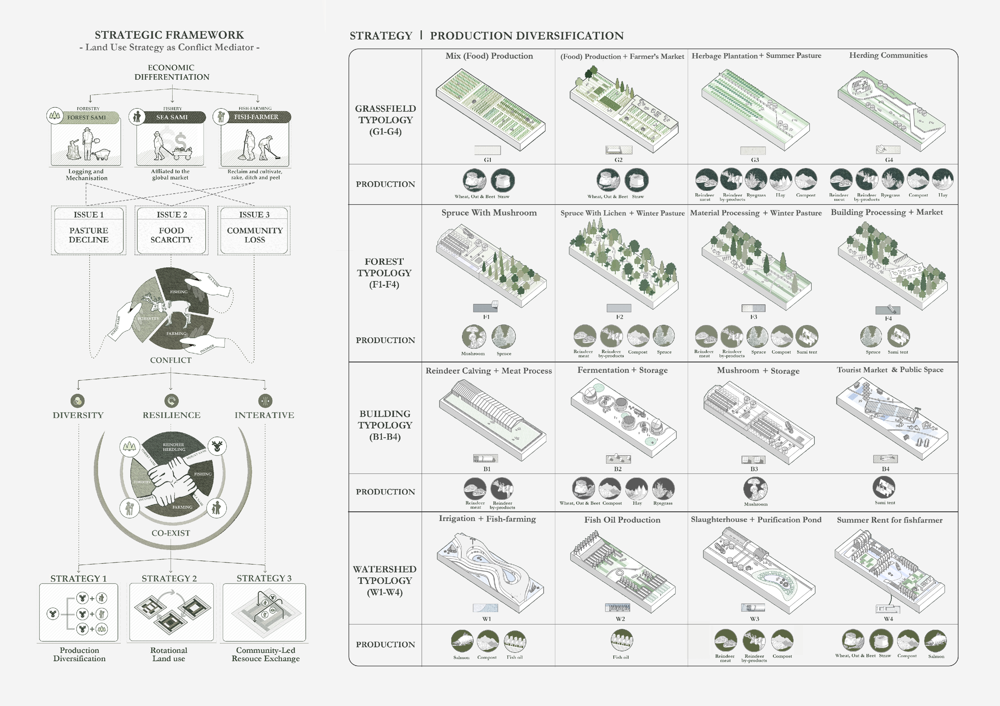

THE FUSION | PRODUCTIVE URBANISM

Lovozero village, nestled amidst the breathtaking landscapes of the Kola Peninsula, is a sanctuary that reverberates with the vibrant heartbeat of the Kola Sami people. Here, in this remote corner of the world, an ancient and self-sustaining indigenous community thrives, shaped by their pastoral reindeer herding, fishing expeditions, and semi-nomadic way of life.
The essence of Kola Sami culture intertwines harmoniously with the rhythms of nature. For centuries, the Kola Sami people have roamed these lands, tending to their cherished reindeer herds, a practice dating back to the 17th century. However, fishing, a time-honored tradition, predates even the herding of reindeer. Over time, a unique hybrid activity emerged, with fishing expeditions taking place at the summer pastures of the reindeer herds.
The cyclical nature of reindeer herding has shaped the economic adaptations of the Kola Sami people. During the winter months, they rely predominantly on reindeer meat and its byproducts for sustenance, while the bountiful summer brings forth an abundant supply of fish. The gradual decline in reindeer herding activities in the region has, to some extent, led to the burgeoning growth of the fishing industry, establishing connections with both the domestic and international markets. Fish has now become a vital source of sustenance and income for local families.
At the heart of it all lies the picturesque village of Lovozero, home to 90% of Russia's Kola Sami population and representing a quarter of its total inhabitants. This enchanting settlement stands proudly as the custodian of Kola Sami history, culture, and way of life. Within Lovozero, the esteemed Museum of Kola Sami Heritage stands as a testament to the rich tapestry of the Sami people's traditions, earning its well-deserved reputation as the "cultural capital of the Russian Sami."
Beyond its cultural significance, Lovozero possesses immense natural, economic, and touristic value. It occupies a pivotal position along the grazing route of summer and winter, serving as vital grazing land for the diverse populations of mountain Sami, coastal Sami, forest Sami, and Scandinavian farmers who call this place home at different times throughout the year. Today, however, Lovozero faces the complex challenge of balancing the coexistence of various industries within its boundaries.

This project envisages a sectoral co-existing framework to cope with the conflicts between various industries in a Russian Sami community. With the new land use strategy, Lovozero will embrace a future of diversified land productivity, rotational land use, and seasonal material flows between different productive sectors. The project proposed a Lo-Tech response to address food source insufficiency, grazing land deterioration and the loss of community-based resource management system. With three concepts at its core: diversity (production diversification), resilience (rotational land use), and interactive (community-led resource exchange), this co-existing framework aims to bring together Sami people engaged in fish-farming, forestry, and reindeer herding together to the preservation and enhancement of traditional practices, cultural landscape, and ethnic heritage.

At the heart of Sámi livelihood lies the age-old practice of semi-nomadic reindeer herding. Since medieval times, the Sámi people have grazed their reindeer, gradually integrating fishing as a supplementary industry, leading to a delicate coexistence of both pursuits. However, the colonization wave that swept Scandinavia during the 18th century brought a surge of Scandinavian fish farmers who sought to assert their dominance and maintain control by restricting grazing rights, thereby undermining Sámi agriculture. The subsequent industrial revolution of the 19th century further eroded Sámi rights to their lands and waters.
The Lappmark border, established in 1766, defined the territories of fish farmers and Sámi reindeer herders, abandoning all summer pastures outside the herders' territories. This marked the pinnacle of industrial conflicts, which persisted until the abolition of the border in 1928. It was not until 1986, with the establishment of the Sami constitution, that the pursuit of reclaiming their rights gained significant momentum.
However, the past few decades have witnessed new threats to the Sámi way of life. Exploitation of cultural resources and the rapid development of tourism since the 1990s, coupled with the profound occupational transformation resulting from the flourishing fishery industry in the early 2000s, have placed immense pressure on the Sámi community. Additionally, the relentless effects of climate change in recent years have posed a formidable challenge, with grazing lands succumbing to the icy grip of snow and endangering the already fragile tradition of reindeer husbandry.
Sami people now find themselves at a crossroads as the profitability of reindeer husbandry dwindles, leading to economic differentiation within their community. In response, they have embarked on two distinct paths to transition from temporary nomadic settlements to more permanent dwellings. One approach involves relinquishing the less lucrative reindeer husbandry in favor of a primary focus on fishing, supplemented by forestry as a secondary industry. The other path entails preserving reindeer husbandry while diversifying into additional sectors, although this accounts for only 10% of the community. Currently, the land in Lovozero encompasses fields, forests, and pastures. However, the existing industrial structure has given rise to three major challenges.
This degradation directly impacts the reindeer's food source, as lichen vegetation diminishes, leading to inadequate nourishment and reduced grazing capacity. Alternative feeding methods, such as supplementing with non-lichen food sources like moss or artificially dispersing lichen spores, prove prohibitively expensive, exacerbating the financial struggles of already impoverished Sámi families.
The intensive felling of trees has also led to a decrease in old-growth forests and fragmentation of forest pastures. Traditionally, reindeer herders employed a system of rotational grazing, resting pastures for a year to allow lichen coverage to regenerate. However, with a decreasing number of pastures, all winter pastures are occupied each year, resulting in overuse of grazing land and further limiting its ability to recover. These circumstances have engendered tensions between herders and forestry populations.
They allocated and merged pastures to balance herd size and carrying capacity. However, Russian authorities do not recognize Siida's legitimacy, and a bureaucratic system now controls land management. Local residents must negotiate with large companies for permits, resulting in traditional industries becoming subsidiaries with minimal benefits for the community. Over-reliance on fishing has led to the gradual decline of traditional reindeer husbandry.

The original site comprised four distinct land typologies: grass fields, forests, buildings, and watersheds, each isolated from one another. The initial step entails achieving diversity within a single module, enabling the coexistence of different sectors on a smaller scale. For each spatial typology, four modules with varying productivity are employed. The grass field typology integrates farming and pastoral systems, incorporating grass cultivation and summer pastures. The forest typology combines mushroom and lichen cultivation, incorporating forestry activities within winter forest pastures. The building typology provides indoor and semi-indoor spaces for reindeer breeding, meat processing, mushroom fermentation, crop storage, and community gatherings. Lastly, the watershed typology primarily focuses on water-related production spaces, such as fishing, irrigation, fish oil extraction, reindeer slaughter, wastewater purification, and fish farmers' residences.

The overall planning of the site is an extension of its original land use. The first step involves extending nearby water bodies and roads into the site. The design then determines the smallest spatial module based on the scale of the existing pastures, resulting in a grid system with strip-shaped spaces measuring 20*60m. The spatial ownership follows a logic from public to private and back to public. The central water bodies are predominantly designated as public spaces, with branching water bodies serving as communities for fish farmers, while dense forests occupy the ends. Interspersed between the central water bodies and forests are open or semi-open farmland and pastures. The quantity and arrangement of module units are determined based on the relationships between production chains. Rough estimates indicate a total production of 27 tons of barley, oats, and beets, 81 tons of ryegrass, 30.9 tons of mushrooms, 15.4 tons of spruce, and 2.74 tons of reindeer meat. These products serve both as commodities for the market and as resources for exchange within the community.

The second strategy is rotational land operations and properties, implemented within the coexisting Siida community that encompasses the four land types.
During spring and summer, the watershed serves as an open territory for fishponds, supporting fish farming activities. In autumn, the Sea Sami community utilizes the watershed for fish oil extraction. In winter, the pond is opened to the public for sludge collection, ensuring a comprehensive and sustainable use of the resource. The warehouse and storey typology plays a crucial role in autumn, functioning as a public fermentation production and storage space. In winter, the Mountain Sami community manages supplementary food storage, promoting self-sufficiency and resilience.
For the fish-farming community, spring and summer involve local farmers renting family houses to the Sea Sami, enabling collaboration and resource sharing. In winter, the Sea Sami vacate the family houses, and the spruce forests are rented to incoming Mountain Sami, providing essential winter grazing land. Similarly, the grassland experiences rotational use. In spring and summer, the Mountain Sami move to the summer/grassland pasture, while in winter, the grass pasture is left fallow and reopened to the public, allowing for natural rejuvenation and sustained productivity. Lastly, the forest plays a vital role in spruce cultivation by the Forest Sami during spring and summer. In autumn, the forest becomes a hub for public spruce and by-product harvest, as well as material processing, ensuring the efficient utilization of forest resources.

Through community-based resource exchange, the Siida community leverages the interconnectedness of different industries and natural processes, ensuring the efficient utilization of resources and promoting the sustainability and resilience of the landscape.
In spring, the spruce forests serve as a supplementary food source for the reindeer, facilitating successful mating and calving. The reindeer's manure and excrement are utilized for cultivating agricultural fields and producing fish bait, promoting the development of both fishing and farming industries.
In autumn, as the reindeer transition from grasslands to forests, the harvest of spruce trees coincides with the processing of forest by-products. While crops are harvested, hay and straw can be fermented and stored as supplementary feed for winter grazing or used as fertilizer in the fields for the following year. With the addition of reindeer urine from the slaughterhouse as a catalyst, straw, hay, and fish oil can be utilized for mushroom fermentation. Apart from being sold in the market, mushrooms also become a food supply for the reindeer.
During winter, the bloodwater from the reindeer slaughterhouse is purified in settling ponds and used to irrigate the fallow grasslands. Simultaneously, the excavated pond sludge is returned to the fields, collectively contributing to the restoration practices of the summer lichen pastures.